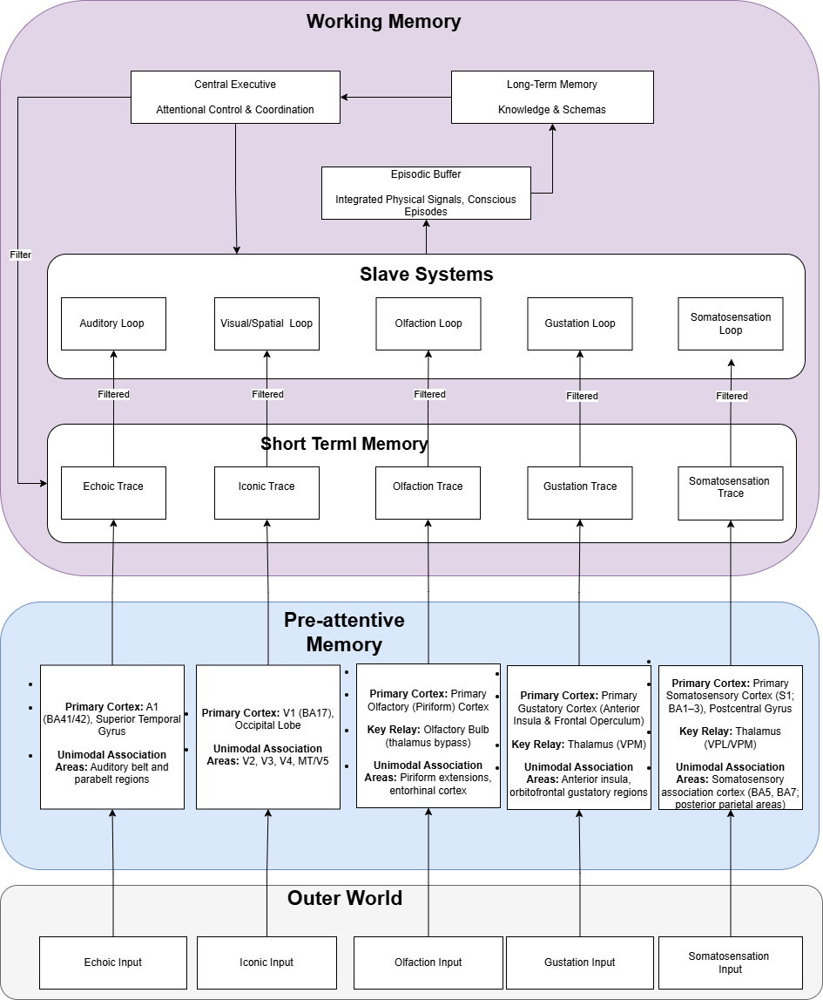

Theory
musWM can be read from two directions. As a model of mind, it is a computational account of musical working memory built on the principles of cognitive psychology. As an analyser, it names harmony, and its names can be checked against music theory. Open either section below.
Cognitive Sciences How the architecture relates to Baddeley’s multicomponent model of working memory
musWM is not only a harmonic analyser. It was designed as a computational model of musical working memory: a system that decides which sounding events remain jointly available long enough to be heard as a chord, and when that material has become stable enough to be named. The design takes its functional constraints from the multicomponent model of working memory introduced by Baddeley and Hitch (1974) and extended with the episodic buffer (Baddeley, 2000), and from sensory accounts of rhythm and meter. The argument is developed in full in the author’s thesis (Tuğral, 2026); this section summarises it.
From a single store to a multicomponent system
The modal model of Atkinson and Shiffrin (1968) treated short-term memory as one capacity-limited store between brief sensory registers and long-term memory: holding information and operating on it drew on the same resource. Baddeley and Hitch (1974) put that assumption to the test with dual-task experiments. Participants could keep a few items in mind while reasoning, with only modest slowing — retention and higher-order processing were not competing for a single pool. Working memory was therefore recast as an active system of distinct parts: a central executive that controls attention, modality-specific slave systems (the phonological loop and the visuospatial sketchpad) and, from 2000, an episodic buffer that binds information from these systems and from long-term memory into integrated, multidimensional episodes available to awareness (Baddeley, 2000, 2012; Baddeley, Hitch & Allen, 2019).

Figure 1. Musical working memory following Baddeley’s core principles. Sensory input from the outer world is registered in pre-attentive memory, held as short-lived modality-specific traces, filtered into slave systems, and bound in the episodic buffer, which exchanges information with long-term memory under the attentional control of the central executive. Reproduced from Tuğral (2026).
Why music needs a different balance
Baddeley’s model was built around language and visuospatial reasoning, where units are discrete and quickly categorised: a word can be recognised and then rehearsed. Musical events rarely work that way. A single note is not yet a harmony; a chord acquires its function only after several sounds have been integrated over time. Two consequences follow. First, executive control cannot simply choose among ready-made symbols; it must also judge when sensory material has become coherent enough to interpret. Second, pitch material cannot be rehearsed internally without changing the very stream being heard, so rehearsal gives way to controlled decay. Sensory theories of rhythm point the same way: beat and meter arise from low-level temporal regularity and entrainment before conscious access (Fiveash et al., 2021; Emmery et al., 2023), and musical training sharpens these pre-attentive responses themselves (Olszewska et al., 2021).
The architecture, component by component
Figure 2. The processing path of musWM read as a working-memory architecture. Control and storage are separated, as in Baddeley’s model: the executive determines what is admitted and when, but stores nothing itself.
| Component in Baddeley’s model | Function in the theory | How musWM instantiates it |
|---|---|---|
| Sensory (pre-attentive) memory | Brief, modality-specific traces that preserve perceptual detail without conscious access; peripheral in the canonical model. | Treated as a functional stage. Each note is registered as a pitch class, with its octave held in a parallel record; these traces constrain what can enter short-term memory at all. |
| Slave systems phonological loop, visuospatial sketchpad |
Modality-specific stores maintained by rehearsal. | A time-limited accumulation window for pitch material. It behaves as a set — duplicates collapse, order of arrival is discarded — and older material decays unless it remains structurally relevant, because music cannot be rehearsed without altering what is heard. |
| Central executive | Attentional control and coordination; a controller, not a store. | Distributed control processes that set the window from tempo, meter and memory span and decide when material is admitted. Top-down control appears as task parameters; bottom-up salience as density, novelty and timing. |
| Episodic buffer | Limited-capacity binding of information across subsystems and long-term memory into integrated episodes available to awareness. | A checkpoint rather than a default destination: a pitch-class set is promoted to a musical event only when temporal and structural conditions are met. Concurrent audio, behavioural, neurophysiological and cardiovascular data are bound to that event. |
| Long-term memory | Schemas and learned knowledge that bias interpretation. | Tonal schemas act only after stabilisation: the Roman numeral is retrieved from a precomputed tensor indexed by key, mode, root and chord code. Symbolic structure is never imposed on raw sensory input. |
A worked example: from arrivals to a label
G4 · C4 · C5 · E4 · E5performance order, unordered[67, 60, 72, 64, 76]octave-sensitive record[7, 0, 0, 4, 4]MIDI mod 12{0, 4, 7}duplicates collapse[0, 4, 7]stable input for the chord codeIbass C, root C, major triadWorked example on a C major triad. Adapted from the figures in Tuğral (2026) on the set-like short-term buffer and the stabilised pitch-class set.
What this adds to statistical models of expectation
Statistical-learning models such as IDyOM describe expectation as the interaction of a corpus-trained long-term model and a piece-specific short-term model (Pearce, 2018). They are effective for that purpose, but their “short” and “long” components are learning timescales rather than memory systems; Rohrmeier and Koelsch (2012) note that the analogy with short-term memory “does not exactly hold”. The present architecture answers a complementary question.
| Statistical-learning model (IDyOM) | musWM as working-memory model | |
|---|---|---|
| Memory | Short- and long-term components defined by learning timescale | Functionally distinct components with capacity limits and control |
| Time | Offline, corpus-based; expectancy inferred from symbolic sequences | Real time, as the performance unfolds |
| Capacity | Implicit, arising from probability estimation | Explicit, time-limited windows that can be inspected and parameterised |
| Binding | Unimodal symbolic input | An episodic-buffer analogue binding harmony to audio, behavioural and physiological data |
How this relates to the figures on this site
The comparison reported here tests one stage of the architecture: whether, once the short-term window and the checkpoint have produced a chord code, the long-term step names it as the textbook does (see Music Theory below). It does not test the cognitive claims themselves. Those are framed as hypotheses to be checked against working-memory research, auditory neuroscience and music cognition — for instance, whether the windows and checkpoints of the model correspond to measurable signatures in the concurrent EEG and cardiovascular record (Tuğral, 2026).
References
- Atkinson, R. C., & Shiffrin, R. M. (1968). Human memory: A proposed system and its control processes. In K. W. Spence & J. T. Spence (Eds.), The psychology of learning and motivation (Vol. 2, pp. 89–195). Academic Press. doi:10.1016/S0079-7421(08)60422-3
- Baddeley, A. D. (2000). The episodic buffer: A new component of working memory? Trends in Cognitive Sciences, 4(11), 417–423. doi:10.1016/S1364-6613(00)01538-2
- Baddeley, A. D. (2012). Working memory: Theories, models, and controversies. Annual Review of Psychology, 63, 1–29. doi:10.1146/annurev-psych-120710-100422
- Baddeley, A. D., & Hitch, G. J. (1974). Working memory. In G. H. Bower (Ed.), Psychology of learning and motivation (Vol. 8, pp. 47–89). Academic Press.
- Baddeley, A. D., Hitch, G. J., & Allen, R. J. (2019). From short-term store to multicomponent working memory: The role of the modal model. Memory & Cognition, 47, 575–588. doi:10.3758/s13421-018-0878-5
- Emmery, L., Hackney, M. E., Kesar, T., McKay, J. L., & Rosenberg, M. C. (2023). An integrated review of music cognition and rhythmic stimuli in sensorimotor neurocognition and neurorehabilitation. Annals of the New York Academy of Sciences, 1530(1), 74–86. doi:10.1111/nyas.15079
- Fiveash, A., Bedoin, N., Gordon, R. L., & Tillmann, B. (2021). Processing rhythm in speech and music: Shared mechanisms and implications for developmental speech and language disorders. Neuropsychology, 35(8), 771–791. doi:10.1037/neu0000766
- Olszewska, A. M., Gaca, M., Herman, A. M., Jednoróg, K., & Marchewka, A. (2021). How musical training shapes the adult brain: Predispositions and neuroplasticity. Frontiers in Neuroscience, 15, 630829. doi:10.3389/fnins.2021.630829
- Pearce, M. T. (2018). Statistical learning and probabilistic prediction in music cognition: Mechanisms of stylistic enculturation. Annals of the New York Academy of Sciences, 1423(1), 378–395. doi:10.1111/nyas.13654
- Rohrmeier, M. A., & Koelsch, S. (2012). Predictive information processing in music cognition: A critical review. International Journal of Psychophysiology, 83(2), 164–175. doi:10.1016/j.ijpsycho.2011.12.010
- Tuğral, O. (2026). A computational model of musical working memory: Software for real-time multimodal data integration in music and interdisciplinary research [M.A. thesis]. University of Massachusetts Amherst.
Music Theory Whether musWM’s labels follow Kostka, Payne & Almén, Tonal Harmony, and every core at every chromatic step
Does musWM follow the textbook?
Measured against , over . The reference is the textbook itself: no human annotation and no other analysis corpus enters the calculation.
musWM names a chord by looking it up: its labels are drawn from a tensor indexed by key, mode, root and chord code. The label ought therefore to be a function of the chord code, and that is precisely what can be tested. For every chord code the engine produced, does its label coincide with the one the textbook derives from the same code?
Why chord-code addresses
The figure is counted over addresses rather than individual moments: mode | code | n = (tonic − bass) | r = (root − bass). Every term is measured from the bass, so a single address stands for all twelve transpositions of a chord, and a correction made at one address holds in every key in which it occurs. Event-weighted figures appear beneath the headline number.